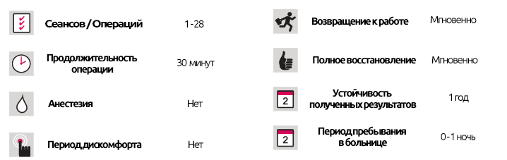

Клиника здорового образа жизни и питания.
Клиника здорового образа жизни и питания.
КРАТКОЕ ОПИСАНИЕ ЛЕЧЕНИЯ
Люди с избыточным весом, которые приходят в нашу клинику здорового образа жизни и питания, сначала осматриваются врачом, затем проводятся анализы для определения причины их избыточного веса. Затем врач и диетолог, работая совместно, создают индивидуальную программу, которая будет стимулировать потерю веса.
Индивидуальный и разнообразный план питания, который вам не надоест, подготавливается с учетом вашего возраста, пола, профессиональной и социальной жизни.
Специально разработанная «профилактическая программа» подготовлена в соответствии с вашим стилем жизни, чтобы обеспечивать постоянную потерю веса
Для поддержки программы похудения и облегчения порционирования Вам будет предоставлены мерные чашки, счетчики шагов, буклеты об изменении питания, специальные рецепты и специальная программа упражнений.
Программы по снижению веса создаются на 1-2, 2,5 и 3,5 месяца с учетом избыточного веса и здоровья человека.
Центр по обучению рациональному питанию
Существует тесная связь между тем, насколько вы здоровы и будете здоровы, и пищей, которую вы едите. Если вы ответите «да» на одну или несколько проблем, описанных ниже, Вам следует поговорить с нашими экспертами в нашем консультационном центре по вопросам питания:
- Если ваша диета не подходит для вас или вы подозреваете, что это так.
- Отсутствие прогресса в попытке изменить свой образ жизни и диету, несмотря на многочисленные попытки.
- Если вам нужно снизить уровень липидов и холестерина в крови, но вы не знаете, как это сделать.
- Если вы не знаете, как правильно питаться, избегая употребления многих видов продуктов.
- Если вы беременны, проходите через менопаузу или подобные периоды.
Ваш специалист разработает индивидуальную программу питания с учетом вашего текущего состояния здоровья, привычек питания и образа жизни.
Особые обстоятельства, профилактические и терапевтические продукты
Изменение вашей диеты и образа жизни может помочь вам защитить себя от болезней, уменьшить причины и симптомы существующих или даже исцелить вас. Предоставляются индивидуальные планы питания и проводятся тренинги для обстоятельств, перечисленных ниже, и многих других:
- Диабет 1 и 2 типа.
- Нарушения метаболизма глюкозы (инсулинорезистентность, реактивная гипогликемия и др.).
- Сердечные заболевания.
- Высокий уровень липидов и холестерина в крови.
- Повышенное кровяное давление
- Ожирение.
- Болезни почек
- Заболевания печени
- Болезни, связанный с обменом веществ.
- Болезни пищеварительной системы.
- Питание в период беременности.
- Питание в период менопаузы.
- Питание для спортсменов.
- Детское питание.
- Питание для пожилых людей.
Советы по снижению веса
Чтобы похудеть уменьшите ежедневное потребление калорий, увеличивая количество калорий, которые вы сжигаете. Уменьшение количества пищи, которую вы едите, недостаточно, потому что это замедляет обмен веществ, что приводит к замедлению снижения веса.
Если вы регулярно набираете вес, сначала постарайтесь сохранить свой вес в течение 2-3 месяцев перед диетой.
Быстрее всего Вы похудеете в первую неделю своей диеты, так как ваш организм выводит лишнюю воду. Как только эта лишняя вода будет удалена, ваша скорость потери веса начнет замедляться. Это абсолютно нормально и не вызывает беспокойства или паники.
Никогда не пропускайте приемы пищи во время или после диеты, так как обмен веществ в вашем организме замедлится. Никогда не начинайте день без завтрака, и ешьте обед и ужин, чтобы принимать пищу три раза в день. Другими последствиями пропуска приема пищи являются снижение уровня сахара в крови, вызывающее усталость и сонливость.
Не наполняйте тарелки полностью и не оставляйте кастрюли с едой на столе во время еды, держите их в труднодоступных местах.
Не читайте и не смотрите телевизор во время еды, так как вы не поймете, сколько вы едите, и не осознаете, что уже насытились. Сконцентрируйся на еде и распробуйте каждый кусок еды. Ешьте медленно, хорошо пережевывая, прежде чем проглотить. Не забывайте, что вы будете чувствовать себя сытым только через 20 минут после еды. Кладите свои столовые приборы на стол после каждого укуса, чтобы есть еще медленнее.
Обратитесь за помощью к врачу или диетологу, прежде чем решиться начать диету.
Ваша диета должна быть разработана индивидуально для вас. То, что подходит вашему другу, может не сработать нас вас.
Выпивайте стакан теплой воды, как только проснетесь.
Выпивайте стакан воды перед каждым приемом пищи. Волокнистые продукты поглощают эту воду, увеличивая их объем в желудке и, следовательно, вы будете чувствовать себя более сытым, употребляя меньше пищи.
Не ешьте много раз, ешьте низкокалорийные закуски (фрукты, овощи, молоко, мюсли, хлеб из непросеянной муки и т. д.) и выпейте 2 стакана воды, чтобы снизить аппетит.
Не ходите по магазинам на голодный желудок. Подготовьте свой список покупок перед тем, как выйти из дома, и возьмите достаточно денег на то, что вы планируете купить. Оставьте свои дебетовые / кредитные карты дома.
Избыточный вес / ожирение является хроническим заболеванием и требует уделения особого внимания его пожизненному лечению, тщательному соблюдению диеты и физическим упражнениям.